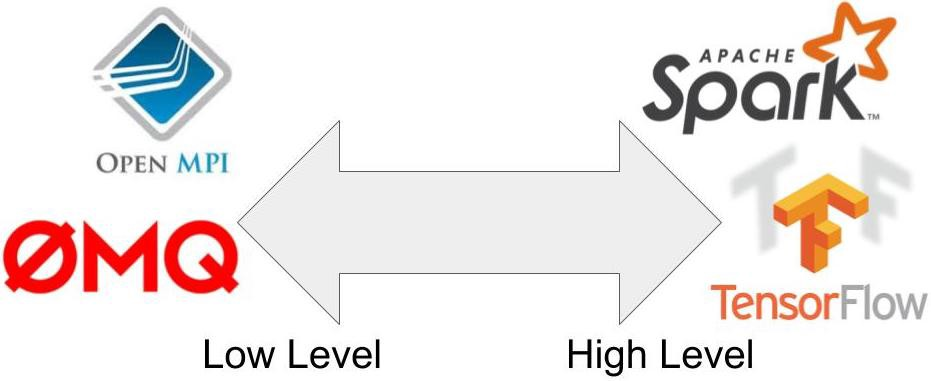
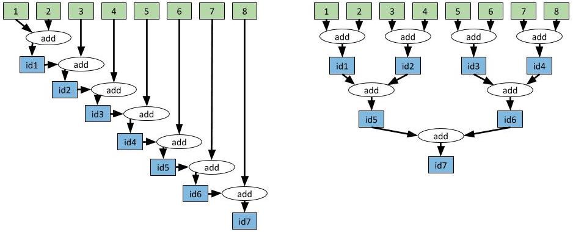

Table of Contents
- What is Ray?
- Why Ray?
- Necessary Concepts
- Starting Ray
- Parallelism with Tasks
- From Classes to Actors
- Reference
Robert Nishihara의 허락을 받아, Modern Parallel and Distributed Python: A Quick Tutorial on Ray을 번역한 글입니다.
What is Ray?
Ray는 파이썬에서 병렬, 분산 프로그래밍을 위한 오픈소스 프로젝트입니다.
병렬, 분산 컴퓨팅은 현대 애플리케이션을 구성하는 요소 중 하나로 자리잡았습니다. 우리는 필요에 따라 멀티코어나 여러 대의 머신의 리소스를 최대한 활용해서 애플리케이션을 가속해야할 필요가 있습니다.
웹 사이트를 크롤링하거나 사용자 질의에 응답하는 소프트웨어들은 누군가의 노트북에서 돌아가는 single thread기반의 프로그램이 아니고, 서로 통신하고 상호작용하는 서비스 집합이라고 볼 수 있습니다.
이번 포스팅은 Ray를 사용해서 병렬,분산 어플리케이션을 만드는 방법에 대해서 설명합니다.
Why Ray?
많은 튜토리얼들이 Python의 multiprocessing 모듈을 어떻게 사용하는지 설명합니다.
하지만 Python의 multiprocessing 모듈은 한계점을 가지고 있어 현대 애플리케이션이 요구하는 분산, 병렬에 대한 필수사항을 충족하지 못합니다.
현대 애플리케이션이 요구하는 분산, 병렬처리에 대한 필수사항은 다음과 같습니다.
- 같은 코드를 한대 이상의 머신(machine)에서 작동시켜야함
- state를 가지고, 통신이 가능한 actor와 microservice를 만들 수 있어야함
- machine failures를 깔끔하게 다룰 수 있어야함
- 대규모 객체와 수치 데이터를 효율적으로 다룰 수 있어야함
Ray는 위에서 언급한 요구사항을 모두 충족합니다. 또한 간단한 작업을 단순하게 만들며, 복잡한 동작을 하게끔 프로그래밍하는 것 또한 가능합니다.
다른 회사들이 자신들의 Python 프로덕션을 확장하기 위해서 Ray를 어떻게 활용하고있는지 배우고싶다면, Ray Summit에 등록하세요!
Necessary Concepts
전통적으로 프로그래밍은 1). 함수(Functions), 2) 클래스(Classes)라는 핵심 개념에 의존합니다. 생각해보면 우리는 함수와 클래스만으로 많은 애플리케이션들을 만들어왔습니다.
하지만, 함수와 클래스로 구성된 애플리케이션을 분산 환경으로 마이그레이션하려고하면 함수, 클래스라는 개념을 사용할 수 없게됩니다.
따라서 현재까지 알려진 병렬, 분산 도구를 활용해서 싱글 스레드 애플리케이션을 병렬, 분산 애플리케이션으로 마이그레이션을 하기 위해서는 애플리케이션 코드를 처음부터 다시 작성해야합니다.
현재까지 알려진 병렬, 분산도구는 저수준에서 고수준까지 다양한 도구들이 있습니다.
먼저 저수준 도구로는 메세지의 송수신을 저수준의 프리미티브로 제공하는 OpenMPI, Python Multiprocessing, ZeroMQ이 있습니다. 이 도구들은 분산, 병렬 환경을 위한 강력한 기능들을 제공합니다. 하지만, 전통적인 프로그래밍과는 다른 추상화 개념을 사용합니다. 이로 인해 위 도구들을 활용해서 기존의 싱글 스레드 애플리케이션을 분산, 병렬 어플리케이션으로 마이그레이션하기 위해서는 코드 전체를 재작성해야합니다.
또 다른 예로 도메인에 특화되어 고수준의 추상화를 제공하는 도구들이 있습니다. 딥러닝 모델을 학습하기 위한 TensorFlow, 데이터와 SQL 처리를 위한 Spark, 스트림 처리를 위한 Flink가 대표적입니다. 이 도구들은 neural network나 데이터셋, 스트림에 대한 고수준의 추상화 API를 제공합니다. 하지만, 고수준 추상화를 제공하는 도구들 역시 직렬화된 프로그래밍(serial programming)에서 사용하는 추상화와 다르기 때문에, 애플리케이션 코드 전체를 그에 맞게 재작성해줘야하는 단점이 있습니다.

Ray는 위에서 설명한 도구들과 같은 고수준, 저수준이 아닌 중간수준에 위치합니다. Ray는 함수와 클래스를 task, actor라고 불리는 분산환경에 적합한 형태로 변환하며, 이를 통해 병렬, 분산 컴퓨팅을 지원하는 메커니즘을 가지고 있습니다. 따라서 사용자들은 이전과 다르게 코드를 재작성 없이 기존의 함수와 클래스 구조를 유지하면서 분산, 병렬 프로그래밍을 할 수 있습니다.
Starting Ray
Ray의 ray.init()명령어는 Ray에서 사용하는 프로세스들을 모두 구동합니다.
만약 클러스터 환경을 이용해서 분산 컴퓨팅을 하고자 한다면, 클러스터의 주소(address)를 입력하는 코드 라인 하나만 변경하면 됩니다.
ray.init()명령어로 구동되는 Ray의 프로세스들은 아래와 같습니다.
- Worker : 파이썬의 함수를 병렬적으로 실행할 프로세스(대략 하나의 worker는 하나의 CPU 코어를 의미합니다).
- Scheduler : task들을 worker 혹은 다른 머신에 할당하기 위한 스켸쥴러(task란 Ray에 사용되는 파이썬 함수 혹은 메소드로, Ray에 의해 스켸쥴링되는 단위).
- Shared memory object store : 워커(worker)들간 객체를 효율적으로 공유하기 위한 공유메모리(copy 발생이 없는)
- Inmemory database : 머신 실패(machine failure)와 같은 이벤트 상황에서 task들을 반환하기 위해 메타 데이터를 저장하는 데이터베이스
Ray worker는 thread가 아니며, thread와는 다른 개념의 process입니다.
Python은 GIL(Global Interpreter Lock)으로 인해 multi-threding 지원에 한계가 있습니다.
Parallelism with Tasks
@ray.remote라는 데코레이터를 함수 위에 선언해주는 것만으로 파이썬 함수를 Ray에서 실행 가능한 remote function으로 변경할 수 있습니다.
remote function은 Ray의 프로세스에 의해 비동기적으로 실행됩니다.
아래 예제와 같이 함수 f를 @ray.remote 데코레이터를 통해서 remote function으로 변경했다면, f.remote()를 호출해서 함수를 실행할 수 있습니다. 이때, 호출된 f.remote()는 즉각적으로 future를 반환하고 실제 함수의 실행은 백그라운드에서 진행됩니다.
future는 나중에 반환될 함수의 출력값에 대한 참조입니다.
아래 예제에서 f.remote()에 대한 호출이 즉시 반환되고 다음 remote function이 실행되기 때문에, 백그라운드에서 실행되는 f에 대한 4개의 복사본(task)은 단순히 해당 라인을 4번 실행하는 것으로 분산, 병렬로 실행할 수 있습니다.
파이썬 함수 f를 “remote function”으로 바꾸기 위해서는 함수에 @ray.remote라는 데코레이터를 선언해줘야합니다. 그리고 함수를 f.remote()로 호출하면 즉시 future를 리턴합니다. 그리고 실제 함수의 실행은 백그라운드에서 실행됩니다.
1 | import ray |
Task Dependencies
task는 또 다른 task에 의존할 수 있습니다.
아래 예제에서 multiply_matrices task는 두개의 create_matrix task의 결과를 사용합니다. 따라서 첫번째 두 task의 출력은 자동으로 세번째 task의 인자로 입력됩니다.
결론적으로, 아래 예제를 실행해보면, multiply_matrices는 첫번째 두 task의 출력의 값이 반환되기 전까지는 실행되지 않습니다.
이러한 방식으로 task들을 arbitrary DAG dependencies로 구성할 수 있습니다.
1 | import numpy as np |
Aggregating Values Efficiently
task 의존성을 잘 설계하면 효율적인 방식으로 작업을 수행할 수 있습니다.
예를 들어 아래의 그림처럼 8개의 정수를 더한다고 생각해봅시다.
매우 간단한 예제이지만, 실제로 이러한 형태로 큰 벡터를 통합하는 것은 애플리케이션에 큰 병목이 되기도 합니다. 이런 병목 지점에서 task 의존성을 잘 설계한다면, 단 한줄의 코드 변경으로 시간 복잡도를 선형 시간에서 로그메틱 시간으로 변경할 수 있습니다.

위에서 설명한데로 하나의 task에서 생성된 output을 다른 task의 입력으로 사용하기 위해서는 첫번째 task로부터 반환받은 future를 두번째 task의 입력으로 넣으면 됩니다.
이때, 두번째 task가 첫번째 task의 출력을 의존하고있으면 두번째 task는 첫번째 task가 끝나기 전에는 실행되지 않습니다.
task 의존성은 자동으로 ray의 스켸쥴러가 추적하고 관리하므로, 만약 분산환경일 경우, 첫번째 task의 출력은 자동으로 두번째 task가 있는 머신으로 보내져 실행되게됩니다.
1 | import time |
위의 코드는 명확합니다. 하지만, 이를 while loop를 통해 구현한다면 더 간결하게 구현할 수 있습니다.
1 | # Slow approach. |
From Classes to Actors
클래스없이 좋은 애플리케이션을 만드는 것은 어려운 일입니다. 그리고 이는 분산환경에서도 마찬가지로 어렵습니다.
클래스 데코레이터 @ray.remote를 사용하면 Ray에서 파이썬 클래스를 사용할 수 있습니다. 클래스를 인스턴스화하면 Ray는 새로운 액터(Actor)를 생성합니다. 액터는 분산환경 어딘가에서 실행되지만 객체의 복제본(object copy)을 유지하는 프로세스입니다.
액터의 메소드를 실행하면 Ray는 해당 메소드를 액터 프로세스 위에서 작동하는 task로 변환합니다. 액터 프로세스 위에서 작동하는 task는 액터의 상태(state)에 접근이 가능하고 상태를 변경할 수 있습니다. 이러한 방법으로 액터는 액터의 상태값을 여러 task간 공유합니다.
개별적인 액터는 메소드를 직렬로 실행하며(블럭킹), 액터의 메소드는 atomic 속성을 갖습니다. 따라서 race condition이 발생하지 않게됩니다. 액터를 이용한 병렬성은 다수의 액터를 생성하는 방식으로 구현합니다.
아래 예제는 액터를 사용하는 간단한 예제입니다. Counter.remote()는 새로운 액터 프로세스를 생성합니다.
액터 프로세스는 Counter 객체의 복사본을 갖으며, c.get_value.remote()와 c.inc.remote()는 원격 액터 프로세스(remote actor process)에서 task를 실행하고 액터의 상태를 변경합니다.
1 |
|
Actor Handles
위에서 우리는 파이썬의 메인 스크립트에서 액터의 메소드를 실행하는 예제를 살펴봤습니다.
액터의 강력한 장점은 핸들(handle)을 액터에 전달할 수 있는 것입니다. 이는 다른 액터나 다른 task가 동일한 액터의 메소드를 호출할 수 있게 해줍니다.
아래 예제는 메세지를 저장하는 액터를 생성합니다. 몇몇의 worker task는 반복적으로 messages를 액터로 푸쉬합니다. 그리고 파이썬 메인 스크립트는 주기적으로 이 메세지를 읽습니다.
1 | import time |
Ray의 액터는 매우 강력합니다. 액터는 파이썬의 클래스를 가져와서 다른 액터와의 작업 혹은 다른 애플리케이션에 질의할 수 있는 마이크로 서비스로 인스턴스화할 수 있습니다.
task와 액터는 Ray가 제공하는 핵심적인 추상입니다. 이 두 가지 개념은 매우 일반적이면서 정교한 애플리케이션 구현에 사용할 수 있습니다.
Ray는 딥러닝에 사용되는 정교한 애플리케이션 중 하나인 분산 강화학습, 하이퍼파라미터 튜닝 도구, 가속화된 판다스를 제공하니 한번 살펴보시기 바랍니다.
Reference